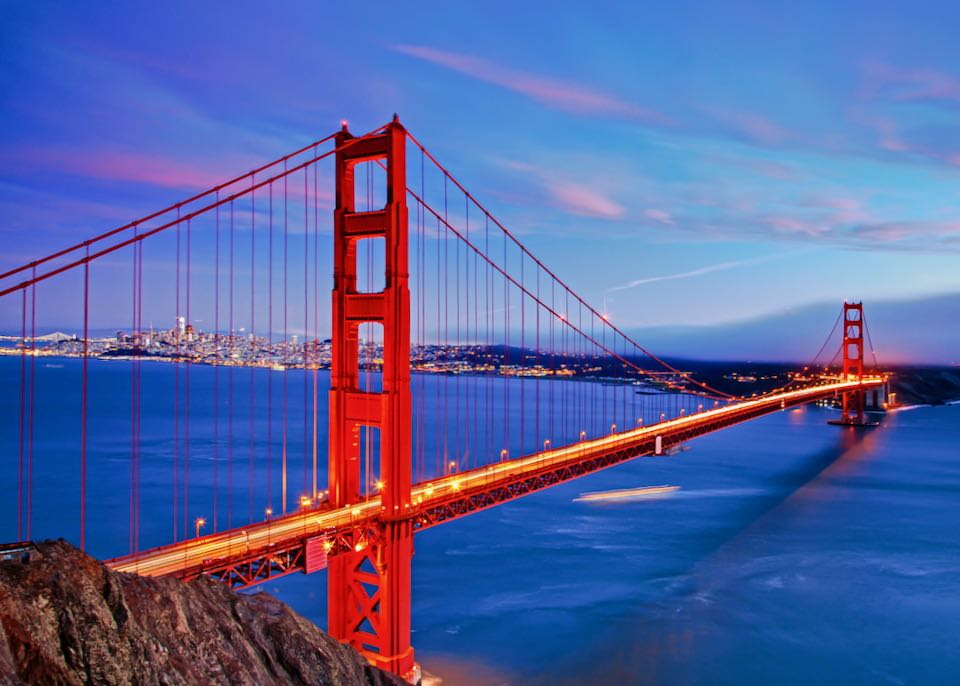
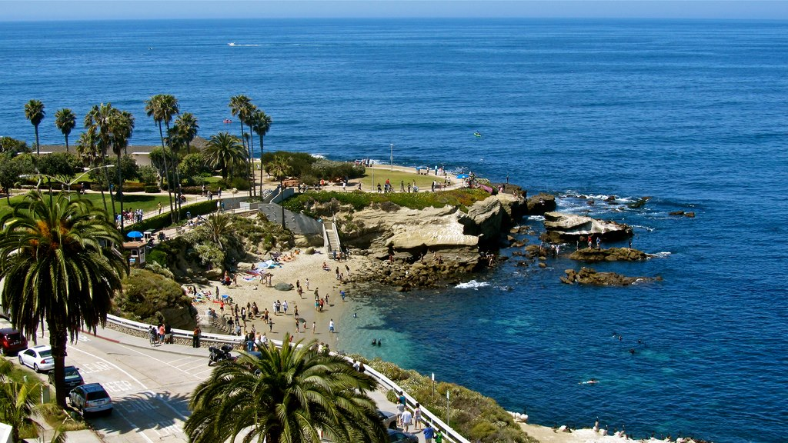

Cities
California has many major cities that are all unique from one another. Some of my favorite cities I have been to in California are: San Francisco, Los Angeles, and San Diego.
San Fransisco
San Francisco is a very cool city and is famous for its Golden Gate Bridge. The Golden Gate Bridge connects San Francisco to Marin County and the bridge itself is 1.7 miles long and about 90 feet across. Sports teams in San Fransisco include the Warriors, Giants, and 49ers. Teams just outside the Bay Area are the Oakland A's and the San Jose Sharks.
Los Angeles
Los Angeles is the largest city in California, and is the second-most populous city in the United States. One of my favorite places to go in Los Angeles is Venice Beach because it is so big. The beach has trails around the sand, basketball courts, beach volleyball nets, outdoor gym, and much more. The sports teams in L.A. are the Lakers, Dodgers, Clippers, Rams, Chargers, and Kings.
San Diego
San Diego is the eighth most populous city in the United States. It has tons of beaches, very sunny, and very warm. My favorite place to go in San Diego is La Jolla. It is a small town just outside of San Diego that has many activities like: ocean kayaking, paddle boarding, surfing, snorkeling, and scuba diving. San Diego is also famous for its zoo. The Padres are the only professional sports team in San Diego.